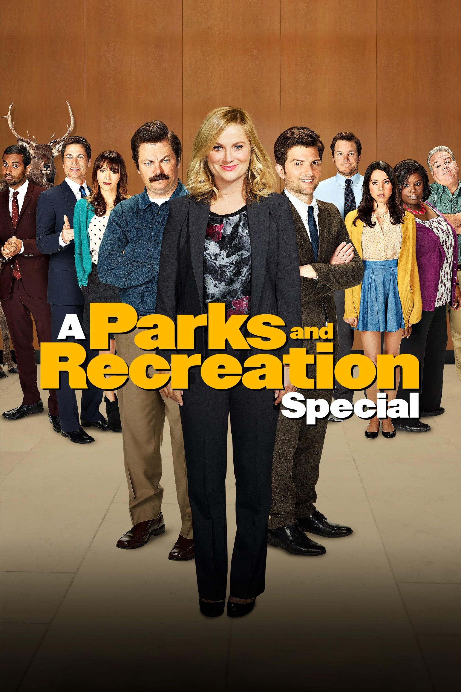

Good media is a good media. You don't need the bleeding edge of technology but you do need a
lot of bandwidth. Take a gander at our selection of top streaming shows! They're guaranteed to
kill many hours of what should have been productive time.
GLOW
The Netflix original series GLOW has one of the more original premises in recent TV
history: It chronicles the life of a fledgling professional wrestling promotion called the
Gorgeous Ladies of Wrestling, as various aspiring actresses and generally women down
on their luck audition and agree to take a stab at a wholly new field.

Parks and Recreation
What sets Parks and Recreation apart from other comedies is that it’s absolutely sincere
and free of cynicism. It’s clear that even if the characters rib each other, there’s genuine
love between them. But yes, the show is hilarious, and Amy Poehler’s Leslie Knope is
one of the seminal sitcom characters of our time.
Stranger Things
The 80s-set mystery thriller is equal parts It, Stand by Me, and The Goonies as it mashes
up the creepy atmosphere of a Stephen King novel with compelling characters and a
strong narrative drive. The true test of Stranger Things is whether the show works
without the nostalgia-inducing 80s setting, and the answer is yes.
Star Wars: The Clone Wars
Star Wars: The Clone Wars takes place during the title conflict, a time when Anakin
Skywalker and his fellow Jedi Knights led the Grand Army of the Republic against the
Separatists’ New Droid Army. It’s notable for greatly expanding (and improving on)
Anakin Skywalker’s backstory before he took on the persona of Darth Vader.
Top Movies of 2018
It's not even award season yet but let's rank the top movies of the year.
Ready Player One
In the year 2045, people can escape their harsh reality in the OASIS, an immersive virtual
world where you can go anywhere, do anything, be anyone-the only limits are your own
imagination. OASIS creator James Halliday left his immense fortune and control of the
Oasis to the winner of a contest designed to find a worthy heir.
Deadpool 2
After surviving a near fatal bovine attack, a disfigured cafeteria chef (Wade Wilson)
struggles to fulfill his dream of becoming Miami's hottest bartender, while also learning
to cope with his lost sense of taste. Searching to regain his spice for life, as well as a flux
capacitor, Wade must battle ninjas, the yakuza, and a pack of sexually aggressive
canines, as he journeys around the world to discover the importance of family, friendship,
and flavor - finding a new taste for adventure and earning the coveted coffee mug title of
World's Best Lover.
Tully
Marlo, a mother of three including a newborn, is gifted a night nanny by her brother.
Hesitant to the extravagance at first, Marlo comes to form a unique bond with the
thoughtful, surprising, and sometimes challenging young nanny named Tully.
Black Panther
"Black Panther" follows T'Challa who, after the events of "Captain America: Civil War,"
returns home to the isolated, technologically advanced African nation of Wakanda to take
his place as King. However, when an old enemy reappears on the radar, T'Challa's mettle
as King and Black Panther is tested when he is drawn into a conflict that puts the entire
fate of Wakanda and the world at risk.